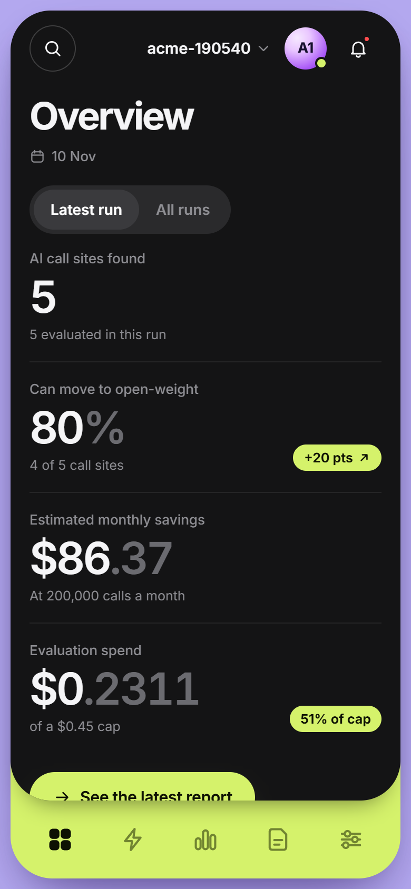
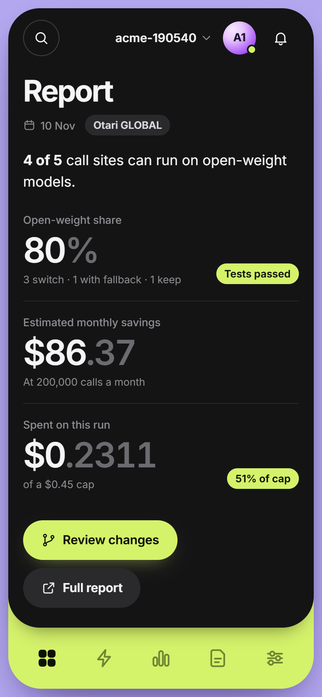
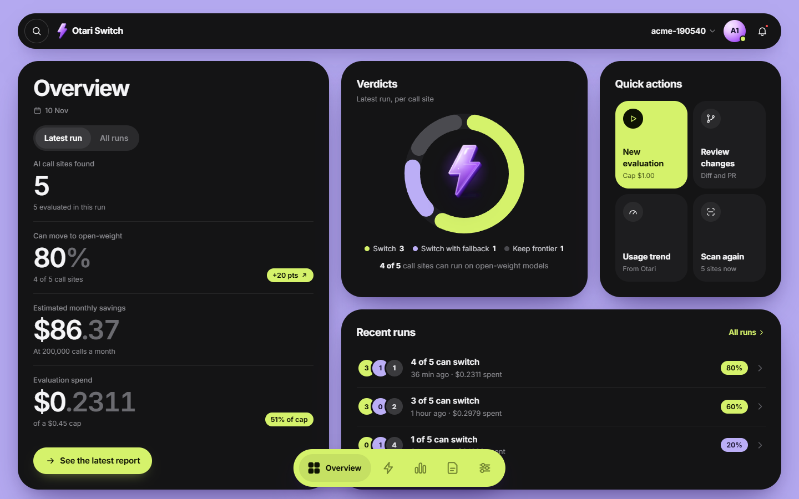
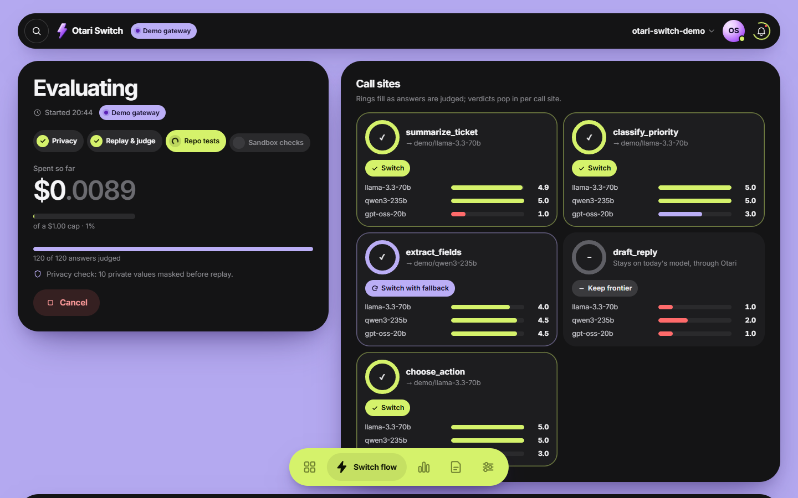
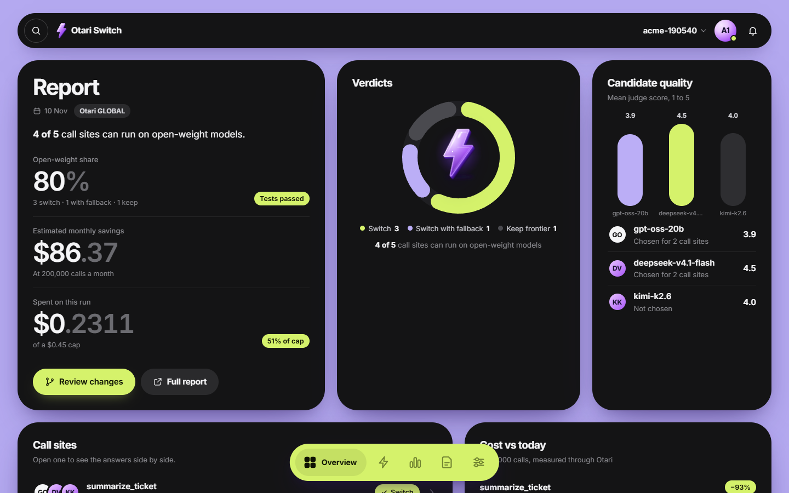
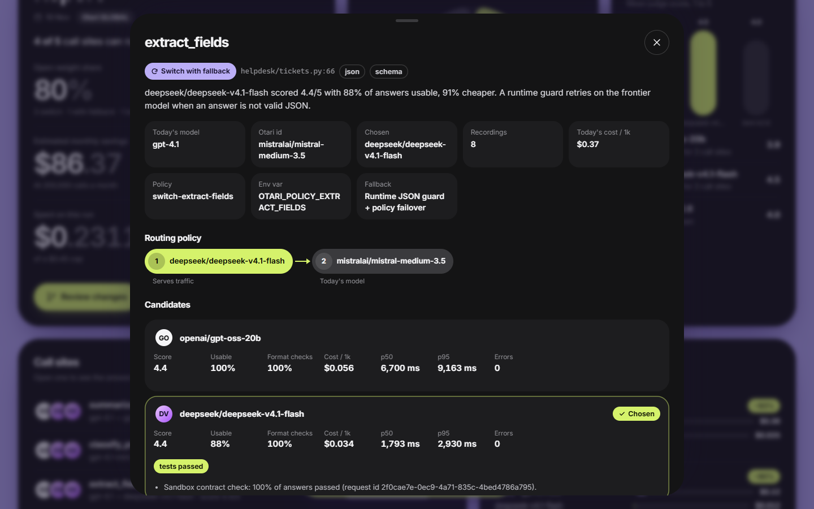
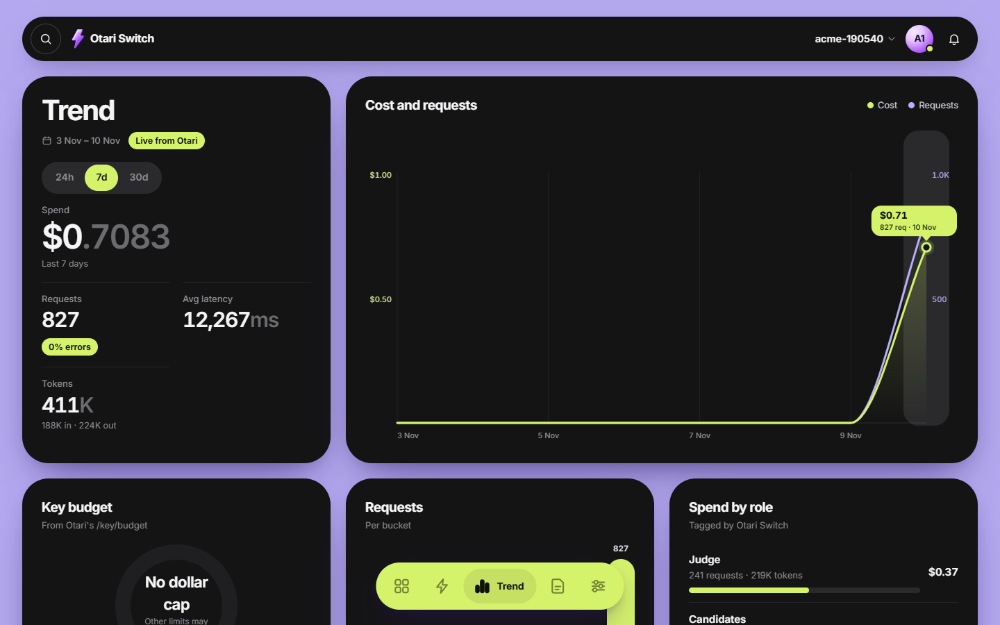
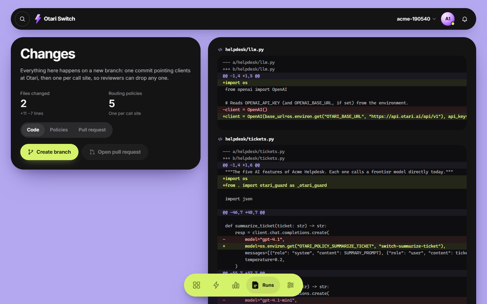
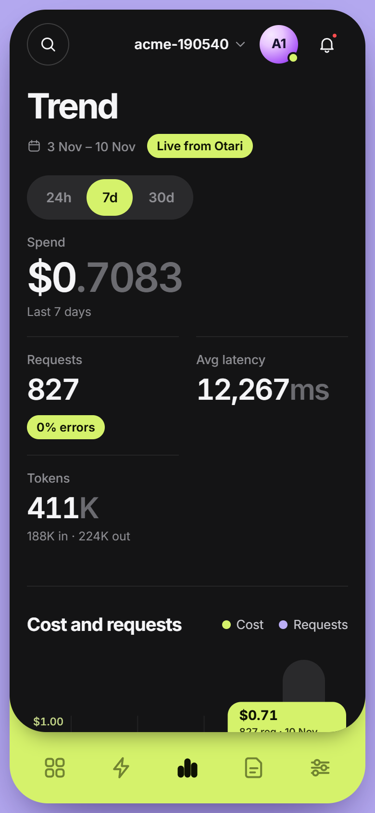

The pull
Open-weight models can cost less and loosen the lock-in to a single provider. The hard part is knowing which calls can move.
Open source · Built on Otari by Mozilla.ai
Otari Switch finds every OpenAI and Anthropic SDK call in your Python repo, replays real prompts on open-weight models through Otari, and judges the answers. You get a verdict per call site, and a pull request that keeps today's model as the fallback.
git clone https://github.com/XSTRANGER-7/otari-switch cd otari-switchpip install -e .
Installs from source (it is not on PyPI). Then run otari-switch demo: a sample helpdesk app and a local demo gateway that answers in Otari's API shapes. No key, no cost, nothing leaves your machine.


4 of 5 calls can switch
real run on otari.ai, bundled sample app
Demo
Connect Otari, find the AI calls, record real prompts, evaluate open-weight candidates under a spend cap, read the report, then open the PR.
The demo video is not available here.
Run the same flow yourself, with no key and no cost: install from source, then
otari-switch demo
Why
Open-weight models can cost less and loosen the lock-in to a single provider. The hard part is knowing which calls can move.
A model that reads well in a chat can still break your JSON, pick the wrong tool or drop a field. Nobody wants to find that out in production.
Evidence per call site. Not a leaderboard score: your prompts, your formats, your tests, one call at a time.
Otari is Mozilla.ai's open-source AI gateway: one API for many models, with routing policies and fallbacks, budgets, guardrails, MCP servers, code execution and a request id on every call. Use the hosted otari.ai or run your own.
Otari Switch uses it twice: to test candidates fairly, and to ship the result as routing policies. Rolling back is a reorder in the Otari dashboard, not a code change.
How it works
Each step is one module in the engine. You can run them one by one in the terminal, or all of them in the app.
01Scan
Parses every .py file with ast, so your code never runs. Finds chat.completions.create, responses.create and messages.create, with model, JSON format, tools and streaming flags.
02Record
Runs your tests (or a script, or imports logs) with a thin wrapper around the OpenAI and Anthropic SDKs. Calls still go to your provider; up to 20 deduplicated requests per call site land in a git-ignored file.
03Mask
Emails, API keys, card numbers (Luhn-checked) and phone numbers become consistent placeholders before anything is replayed.
04Replay
Each recording goes to each candidate through Otari, with only model changed. A preflight drops models that reject a parameter your app sends, such as response_format. Today's model runs through Otari too, so costs compare real usage.cost_usd.
05Judge
Exact checks first: valid JSON, JSON schema, tool name and arguments, short labels. Free text goes to an LLM judge (temperature 0, answer order randomised) that scores 1 to 5 against today's answer.
06Test gate & verdict
Your own test suite runs again with every call through Otari. If it fails, a baseline run tells "the switch broke it" from "it was already failing". Then the cheapest candidate that clears the bar wins.
07Policy
One Otari routing policy per call site, switch-<function>: the chosen open model first, then on failure a backup open model and today's model. Rollback is a reorder in the dashboard, with no code change.
08Pull request
A new branch with one commit pointing clients at Otari, then one commit per call site, so reviewers can drop any one. The PR can be opened through GitHub's MCP server in Otari. Nothing is written without your yes.
Verdicts
The cheapest candidate that clears the bar wins. These are the default rules; change them in Settings or under thresholds: in otari-switch.yml.
4.0mean score, 1 to 5
3.5mean score, 1 to 5
Anything elsea normal outcome, not a failure
$ otari-switch demo --cli
…
1/4 Scan
5 AI call sites found in 7 Python files
…
3/4 Evaluate
• Privacy check
masked 10 value(s), skipped 0 recording(s)
• Replaying prompts on open-weight models
✓ Switch helpdesk/tickets.py:summarize_ticket:0 → demo/llama-3.3-70b
✓ Switch helpdesk/tickets.py:classify_priority:0 → demo/llama-3.3-70b
↻ Switch with fallback helpdesk/tickets.py:extract_fields:0 → demo/qwen3-235b
– Keep frontier helpdesk/tickets.py:draft_reply:0
✓ Switch helpdesk/tickets.py:choose_action:0 → demo/llama-3.3-70b
• Running your tests on the chosen models
tests: passed
• Contract checks in Otari's sandbox
4 of 5 calls can switch · 80% open-weight · tests passed
Spent $0.0090 of $1.00
…otari-switch demo --cli on Nov 10, 2026: the bundled sample helpdesk app against the local demo gateway, with demo models ( marks cut lines). Your numbers will differ.The app
otari-switch ui opens the app at 127.0.0.1:4317. Screens below are from a real run on otari.ai with the bundled sample helpdesk app; only the Evaluate screen shows the local demo gateway.






The same app, laid out for a narrow screen.

How Otari is used
What each one does in Otari Switch, and the module where it lives.
The product's output: one failover policy per call site, in Otari's own shape. Otari-Fallback and Otari-Attempt-Count are recorded per answer.
{"name": "switch-<function>",
"spec": {
"select": [{"default": "<chosen open model>"}],
"on_failure": ["<backup open model>",
"<today's model>"]}}On otari.ai you create them in the dashboard from generated steps. On a self-hosted gateway, apply creates them through POST /api/v1/routing/policies with the operator key. Want a gentler start? apply --canary 25 writes a weighted canary instead: 25% of traffic on the open model, the rest on today's model.
policies.pyotari_client.py
Open-weight candidates answer, a separate open-weight judge scores them, and today's model is the reference and the fallback.
evaluate.pyjudge.py
A hard evaluation cap is checked before every call. Otari's own budget refusals (budget_exceeded) become a clean "budget reached" state.
otari_client.pySpendMeter
Every request carries Otari-Tags with its role (candidate, judge, frontier or sandbox) and an Idempotency-Key, so a retry is never billed twice. Otari's budget and usage summary by role feed the app's Trend screen.
otari_client.pyserver.py
Otari's catalog has no licence field, so each candidate's official model card is read through POST /fetch and its license: line classified: open, restricted terms, or unverified. Shown in the app and the report.
licenses.py
With an Otari service key, each teammate's runs are billed to their own end user and budget (user, Otari-End-User-Budget). The run's cap shrinks to fit that budget, and a refusal names the teammate.
pipeline.pyrecord/override.py
JSON contract checks run in Otari's sandbox: POST /code/execute with timeout_seconds, reading return_code, stdout and stderr.
testgate.py
A guardrail profile in block mode screens recorded prompts before replay. A 403 guardrail_violation skips that recording, and the counts and request ids land in the report.
evaluate.pyotari_client.py
GitHub's MCP server, stored in Otari, opens the PR through caller-orchestrated MCP: one POST /mcp/execute, never retried. Otari Switch also ships its own MCP server.
pr.pymcp_server.py
Every score links to its Otari-Request-ID, shown in the app and stored in report.json. Errors are read from Otari-Error-Code: budget_exceeded stops the run cleanly and x-should-retry: false is respected. Read on every call:
Use it
Same engine, three ways in. Code only changes on a new branch, and only when you ask for it.
git clone https://github.com/XSTRANGER-7/otari-switch && cd otari-switch
pip install -e . # Python 3.10+; or: pipx install .
pip install openai # lets the demo app's own tests run in the test gate
otari-switch demo # sample repo + demo Otari gateway, opens the app in your browser
otari-switch demo --cli # same flow in the terminalcd your-repo
export OTARI_API_KEY=otk_... # otari.ai key (EU workspaces: --region eu); a self-hosted gateway's key starts tk-
otari-switch init # tests the key, reads Otari's catalog, suggests 3 open-weight candidates + a judge
otari-switch ui # the app: scan → record → choose models → evaluate → report → PR
# or the same in the terminal:
otari-switch run # stops for a yes before writing anythingOtari Switch installs from source; it is not on PyPI. Self-hosted Otari works the same with --region http://localhost:8000/api/v1. otari-switch doctor checks Python, key, region, models, judge, SDKs, git and the MCP server, and says how to fix anything missing.
# .github/workflows/otari-switch.yml
on: { workflow_dispatch: {} }
jobs:
switch:
runs-on: ubuntu-latest
permissions: { contents: write, pull-requests: write }
steps:
- uses: actions/checkout@v4
- uses: XSTRANGER-7/otari-switch@main
with:
otari-api-key: ${{ secrets.OTARI_API_KEY }}
budget-usd: "2"
mode: report # or: prmode: report writes the report to the job summary. mode: pr also creates a branch and opens a pull request. Store the key as a repository secret.
{ "mcpServers": { "otari-switch": { "command": "otari-switch", "args": ["-C", "/path/to/repo", "mcp"] } } }scan_reporecord_promptsevaluateget_reportapply_switchInstall the extra from your clone with pip install -e ".[mcp]". apply_switch is a dry run unless the agent passes dry_run: false, which its description tells it to do only after the user says yes.
Safety
Host headers, and needs a per-session token on every API call..otari-switch/, which is added to .gitignore.Honest results. "Keep frontier" is a normal outcome, and the report says why.
FAQ
Including the limits.
Python only for now; JavaScript and TypeScript are next. It reads .py files with ast and never runs your code during the scan. Frameworks that wrap the SDK (LangChain, LlamaIndex) are not detected yet, and embeddings, images and audio calls are listed but not evaluated.
The judge is a model, so read the lowest-scoring answers in the report before merging. To keep it fair it runs at temperature 0 with the answer order randomised, and exact checks (valid JSON, schema, tool name and arguments, short labels) run before it. Your test suite then runs again through Otari.
What you set as the cap. Every evaluation has a hard spend cap (budget_usd, or --budget on the command line), and the meter stops before the next call would pass it. The demo costs nothing: it talks to a local demo gateway on your machine.
No. You see the diff first, and nothing is written without a yes in the terminal or a button press in the app, and then only on a new branch. apply --dry-run shows the change without writing it.
It is read from an environment variable and never written to disk; otari-switch.yml stores only the variable's name. A key pasted into the app stays in memory. Recordings stay on your machine in a git-ignored folder, with private data masked before any replay.
Either. It works with hosted otari.ai (keys start otk_, with an EU region) or a self-hosted Otari with --region http://localhost:8000/api/v1 (keys start tk-). On a self-hosted gateway with the operator key and policies_api: true, apply creates the routing policies through the API; on otari.ai it writes exact dashboard steps instead.